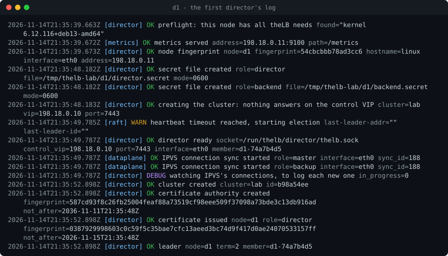
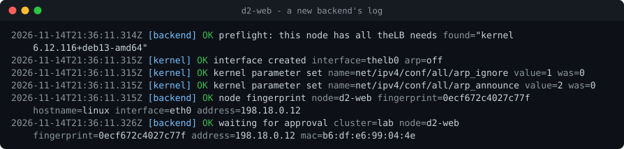
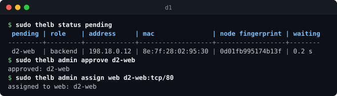
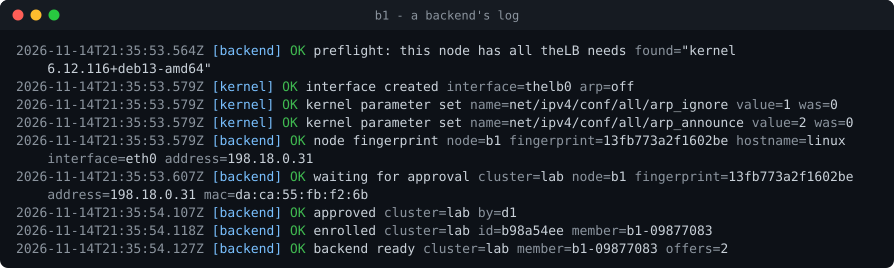
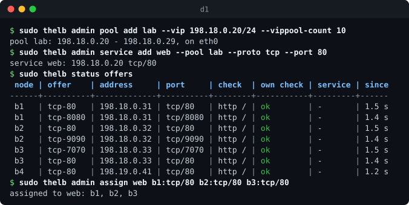
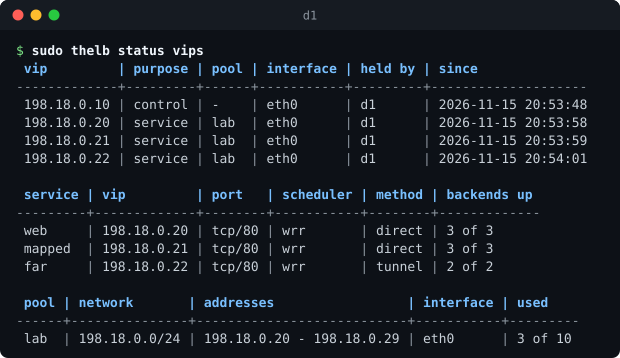

Get started
Quick start
One director, two backends and one web service, in five steps.
The example network#
In this guide all machines are on 10.0.0.0/24:
| Machine | Address | Role |
|---|---|---|
lb-1 | 10.0.0.11 | the first director |
web-1, web-2 | 10.0.0.21, 10.0.0.22 | backends, running nginx on port 80 |
| - | 10.0.0.10 | the control VIP: the cluster's own address, port 7443 |
| - | 10.0.0.20 and up | VIPs for services |
Pick addresses that nothing else uses. theLB checks them before it uses them.
About the screenshots
The screenshots on this site come from the lab, a whole cluster on one machine. There the directors are called d1-d3, the backends b1-b4, the network is 198.18.0.0/24, and the control VIP is 198.18.0.10. The commands are the same.
1. Start the first director#
On lb-1, start a director with --bootstrap:
sudo thelb director --vip 10.0.0.10 --port 7443 --bootstrap \
--secret-file /etc/thelb/director.secret --backend-secret-file /etc/thelb/backend.secretWhat happens:
- It checks that the machine has everything theLB needs (this is called preflight).
- It looks for an existing cluster on the control VIP for 5 seconds, and finds none.
- It creates the cluster, and - because the files do not exist yet - the two secret files, readable by root only.
- It takes the control VIP and becomes the leader.

d1 also runs with --metrics and --debug: hence their two lines.)As text
2026-11-15T20:53:38.492Z [director] OK preflight: this node has all theLB needs found="kernel 6.12.116+deb13-amd64"
2026-11-15T20:53:38.504Z [metrics] OK metrics served address=198.18.0.11:9100 path=/metrics
2026-11-15T20:53:38.505Z [director] OK node fingerprint node=d1 fingerprint=fa65c24eecea87db hostname=linux interface=eth0 address=198.18.0.11
2026-11-15T20:53:47.030Z [director] OK secret file created role=director file=/tmp/thelb-lab/d1/director.secret mode=0600
2026-11-15T20:53:47.030Z [director] OK secret file created role=backend file=/tmp/thelb-lab/d1/backend.secret mode=0600
2026-11-15T20:53:47.031Z [director] OK creating the cluster: nothing answers on the control VIP cluster=lab vip=198.18.0.10 port=7443
2026-11-15T20:53:48.798Z [raft] WARN heartbeat timeout reached, starting election last-leader-addr="" last-leader-id=""
2026-11-15T20:53:48.800Z [director] OK director ready socket=/run/thelb/director/thelb.sock control_vip=198.18.0.10 port=7443 interface=eth0 member=d1-eb0e9509
2026-11-15T20:53:48.800Z [dataplane] OK IPVS connection sync started role=master interface=eth0 sync_id=221
2026-11-15T20:53:48.800Z [dataplane] OK IPVS connection sync started role=backup interface=eth0 sync_id=221
2026-11-15T20:53:48.800Z [director] DEBUG watching IPVS's connections, to log each new one in_progress=0
2026-11-15T20:53:51.922Z [director] OK cluster created cluster=lab id=ac7940f8
2026-11-15T20:53:51.922Z [director] OK certificate authority created fingerprint=88701f2376f6a200c1f8a15110eb7e218ec8d3197395782a27ec93c05d6347b2 not_after=2036-11-12T20:53:47Z
2026-11-15T20:53:51.922Z [director] OK certificate issued node=d1 role=director fingerprint=84d9f095d83497bd96d809cad3cd998a30b3dd11c7dccbb0b4287a908d07c2f6 not_after=2026-11-16T20:53:47Z
2026-11-15T20:53:51.922Z [director] OK leader node=d1 term=2 member=d1-eb0e9509Leave it running. (Later, run it under systemd instead.)
2. Copy the backend secret#
Copy /etc/thelb/backend.secret from lb-1 to each backend, readable by root only:
sudo install -o root -m 0600 backend.secret /etc/thelb/backend.secret # on web-1 and web-2The secret lets a backend ask to join. It does not let it in: a director still has to approve it.
3. Start the backends#
On web-1 and web-2, with nginx already running on port 80:
sudo thelb backend --join 10.0.0.10:7443 --secret-file /etc/thelb/backend.secret \
--offer web=tcp/80,check=http:/--offer web=tcp/80,check=http:/ means: "I have an application. Call it web. It is on TCP port 80. Check it with an HTTP request for /."
The backend joins and waits for approval. Its log shows its node fingerprint - a code that identifies this machine:

As text
2026-11-15T20:54:10.620Z [backend] OK preflight: this node has all theLB needs found="kernel 6.12.116+deb13-amd64"
2026-11-15T20:54:10.623Z [kernel] OK interface created interface=thelb0 arp=off
2026-11-15T20:54:10.624Z [kernel] OK kernel parameter set name=net/ipv4/conf/all/arp_ignore value=1 was=0
2026-11-15T20:54:10.624Z [kernel] OK kernel parameter set name=net/ipv4/conf/all/arp_announce value=2 was=0
2026-11-15T20:54:10.624Z [backend] OK node fingerprint node=d2-web fingerprint=0d01fb995174b13f hostname=linux interface=eth0 address=198.18.0.12
2026-11-15T20:54:10.640Z [backend] OK waiting for approval cluster=lab node=d2-web fingerprint=0d01fb995174b13f address=198.18.0.12 mac=8e:7f:28:02:95:304. Approve the backends#
On the director, list the nodes that are waiting:
sudo thelb status pendingCheck that each fingerprint matches the one in the backend's own log. Then approve them, by name:
sudo thelb admin approve web-1 web-2Or approve many at once with a pattern - theLB shows the matching nodes and asks you to confirm:
sudo thelb admin approve --match 'web-[0-9]+'
As text
$ sudo thelb status pending
pending | role | address | mac | node fingerprint | waiting
---------+---------+-------------+-------------------+------------------+---------
d2-web | backend | 198.18.0.12 | 8e:7f:28:02:95:30 | 0d01fb995174b13f | 0.2 s
$ sudo thelb admin approve d2-web
approved: d2-web
$ sudo thelb admin assign web d2-web:tcp/80
assigned to web: d2-webOnce approved, the backend says backend ready:

As text
2026-11-15T20:53:52.824Z [backend] OK preflight: this node has all theLB needs found="kernel 6.12.116+deb13-amd64"
2026-11-15T20:53:52.827Z [kernel] OK interface created interface=thelb0 arp=off
2026-11-15T20:53:52.828Z [kernel] OK kernel parameter set name=net/ipv4/conf/all/arp_ignore value=1 was=0
2026-11-15T20:53:52.828Z [kernel] OK kernel parameter set name=net/ipv4/conf/all/arp_announce value=2 was=0
2026-11-15T20:53:52.828Z [backend] OK node fingerprint node=b1 fingerprint=0beaab3f6d2dfb43 hostname=linux interface=eth0 address=198.18.0.31
2026-11-15T20:53:52.873Z [backend] OK waiting for approval cluster=lab node=b1 fingerprint=0beaab3f6d2dfb43 address=198.18.0.31 mac=6e:13:73:11:66:cd
2026-11-15T20:53:53.222Z [backend] OK approved cluster=lab by=d1
2026-11-15T20:53:53.224Z [backend] OK enrolled cluster=lab id=ac7940f8 member=b1-13e7aff0
2026-11-15T20:53:53.258Z [backend] OK backend ready cluster=lab member=b1-13e7aff0 offers=25. Create a service#
Three commands on the director. A pool is a range of addresses for VIPs. A service is a VIP, a protocol and a port. An assignment connects a backend's offer to a service.
sudo thelb admin pool add main --vip 10.0.0.20/24 --vippool-count 10
sudo thelb admin service add web --pool main --proto tcp --port 80
sudo thelb status offers
sudo thelb admin assign web web-1:web web-2:webThe service takes the pool's first free address, 10.0.0.20. status offers lists each backend's offers; - under service means "not assigned yet".

As text
$ sudo thelb admin pool add lab --vip 198.18.0.20/24 --vippool-count 10
pool lab: 198.18.0.20 - 198.18.0.29, on eth0
$ sudo thelb admin service add web --pool lab --proto tcp --port 80
service web: 198.18.0.20 tcp/80
$ sudo thelb status offers
node | offer | address | port | check | own check | service | since
------+----------+-------------+----------+--------+-----------+---------+-------
b1 | tcp-80 | 198.18.0.31 | tcp/80 | http / | ok | - | 1.6 s
b1 | tcp-8080 | 198.18.0.31 | tcp/8080 | http / | ok | - | 1.6 s
b2 | tcp-80 | 198.18.0.32 | tcp/80 | http / | ok | - | 1.6 s
b2 | tcp-9090 | 198.18.0.32 | tcp/9090 | http / | ok | - | 1.5 s
b3 | tcp-7070 | 198.18.0.33 | tcp/7070 | http / | ok | - | 1.6 s
b3 | tcp-80 | 198.18.0.33 | tcp/80 | http / | ok | - | 1.5 s
b4 | tcp-80 | 198.19.0.41 | tcp/80 | http / | ok | - | 1.2 s
$ sudo thelb admin assign web b1:tcp/80 b2:tcp/80 b3:tcp/80
assigned to web: b1, b2, b3Within a few seconds both backends pass their health checks, and the leader brings the VIP up. Check it, then try it from a client:
sudo thelb status vips
curl http://10.0.0.20/
As text
$ sudo thelb status vips
vip | purpose | pool | interface | held by | since
-------------+---------+------+-----------+---------+---------------------
198.18.0.10 | control | - | eth0 | d1 | 2026-11-15 20:53:48
198.18.0.20 | service | lab | eth0 | d1 | 2026-11-15 20:53:58
198.18.0.21 | service | lab | eth0 | d1 | 2026-11-15 20:53:59
198.18.0.22 | service | lab | eth0 | d1 | 2026-11-15 20:54:01
service | vip | port | scheduler | method | backends up
---------+-------------+--------+-----------+--------+-------------
web | 198.18.0.20 | tcp/80 | wrr | direct | 3 of 3
mapped | 198.18.0.21 | tcp/80 | wrr | direct | 3 of 3
far | 198.18.0.22 | tcp/80 | wrr | tunnel | 2 of 2
pool | network | addresses | interface | used
------+---------------+---------------------------+-----------+---------
lab | 198.18.0.0/24 | 198.18.0.20 - 198.18.0.29 | eth0 | 3 of 10That is a working load balancer. Next:
- add two more directors, so that one can fail: Directors and failover;
- keep it running after a reboot: Running under systemd;
- save your pools, services and assignments: Keeping them.